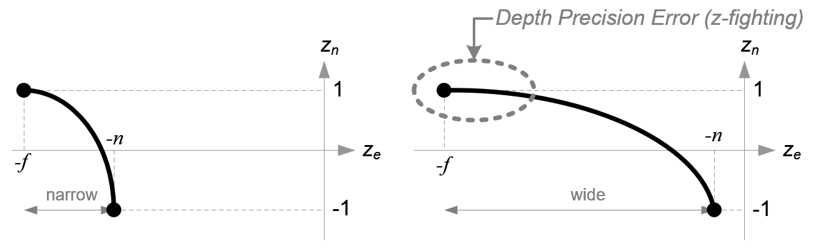

OpenGL
OpenGL

OpenGL简介
- 实质: 图形规范，并非API；具体由显卡商实现;
- 特点: 状态机
GLAT
OpenGL具体代码由硬件厂家实现，调用函数时需要实际函数的指针，GLAT库可以用来将函数指向具体实现。
图形渲染管线
着色器
标准化设备坐标
顶点着色器
Term
perspective:透视
orthographic:正射投影
frustum:平截头体
深度测试 Depth Testing
默认禁用，启用深度测试：
1 | |
- glsl中 gl_FragCoord.z表示片段的深度缓冲值
禁止深度缓冲写入
1 | |
深度缓冲将深度值映射到[0, 1]，是非线性函数，物体离平截头体近平面越近，精度越高，离近平面越远，精度越低：$F_{depth} = \frac{1/z - 1/near}{1/far - 1/near}$

深度测试函数，规定在什么情况通过深度测试
1 | |
深度冲突 Z-fighting
当物体紧密排列时，深度缓冲没有足够精度决定谁在前面，两个形状抢夺显示先后顺序。会有奇怪的显示，冲突解决方法：
- 不要把物体摆放太近
- 使用高精度深度缓冲
- 近平面设置远一点
模板测试 Stencil testing
由窗口库(GLFW)配置模板缓冲，默认禁用，启用模板测试：
1 | |
模板掩码，stencil写入缓冲前先与stencil mask做与运算
1 | |
- 模板函数：
1 | |
用模板测试绘制物体边框
Blending
- source：源颜色，上面叠的颜色
- destination：目标颜色，底色
destination和source和绘制顺序相关
Framebuffer
Matrix
- Scale:
- Translate:
Translate using w(Homogeneous Coordinates-齐次坐标)
Rotate:
- 两个向量的内积，在被同一个旋转矩阵M操作后不变，得旋转矩阵是正交矩阵
- 二维向量旋转矩阵：
现在推导顺时针旋转$\theta$度的旋转矩阵，将$\vec{OP}$顺时针旋转$\theta$度，相当于将坐标系逆时针旋转$\theta$度：
所以顺时针旋转$\theta$度的矩阵是：
逆时针是正角，上述推导为顺时针旋转矩阵
Transform Order: Scale->Rotate->Translate
Projection Matrix:
本节内容学习自：[OpenGL Projection Matrix][http://www.songho.ca/opengl/gl_projectionmatrix.html]
OpenGL Projection Matirx Task:
- Clip coordinates from view coordinates to clip coordinates;
- Normalize device coordinates
Perspective Projection
- project 3D point to near plane.

发现view坐标系下$x_e,y_e$坐标投影到近平面后，$x_p$和$y_p$都由${-z_e}$做分母，故我们将投影空间的$w_p$设为$-z_e$，因为OpenGL输出每一个空间坐标的最后，都要除齐次坐标$w$.
NDC: normalized device coordinate 标准设备坐标
投影空间的$w_p$为$-z_e$，因此Perspective projection Matrix的第四行确定了：
之后我们将$X_p,Y_p$从[l, r]映射到[-1, 1]，转换为NDC:
将裁剪空间边界r,l带入$X_p$，会分别映射为1, -1:
同理，求得$Y_p$的映射：
带入上边界t，映射至NDC的1：
之后将再做恒等式变换：
分别得到裁剪空间坐标$X_c,Y_c$，现在将Perspective projection Matrix补全：
现在我们计算裁剪空间的$Z_c$坐标，需要注意，裁剪空间的$X_c，Y_c$坐标是通过将观察空间的坐标投影到近平面上得到的，近平面的Z坐标恒为-n，所以我们需要不同的方法计算$Z_c$，并且$Z_c$和$Z_e$要是双射。首先$Z_c$肯定和X，Y坐标无关，与$Z_e,W_e$有关，观察空间的$W_e$为1，故$Z_c$只与$Z_e$相关，设：
带入近平面远平面$Z_e$被映射为[-1,1]，带入得：
注意，$Z_n$和$Z_e$是的关系不是线性的，是成反比的，越靠近近平面Z的精度越高，越远离近平面Z的精度越低，这样会导致深度测试冲突(Z-fighting)。

最后终于得到透视投影的投影矩阵：
Orthographic Projection:
正射投影不需要对观察空间坐标做过多变换，直接将坐标裁剪并映射到[-1,1]即可。
本博客所有文章除特别声明外，均采用 CC BY-SA 4.0 协议 ，转载请注明出处！